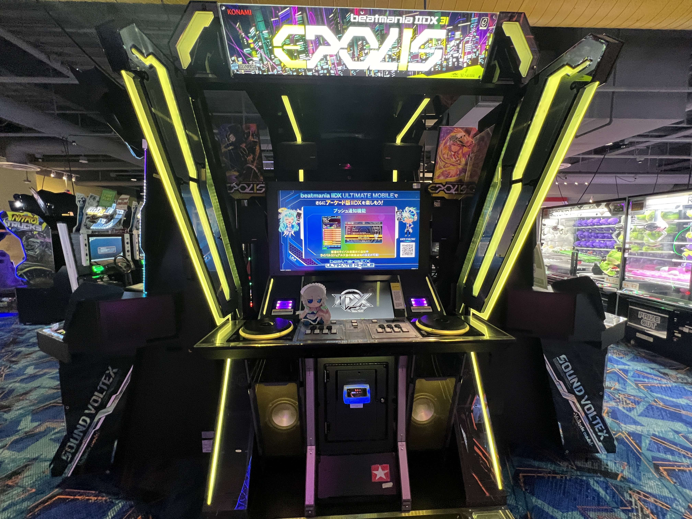
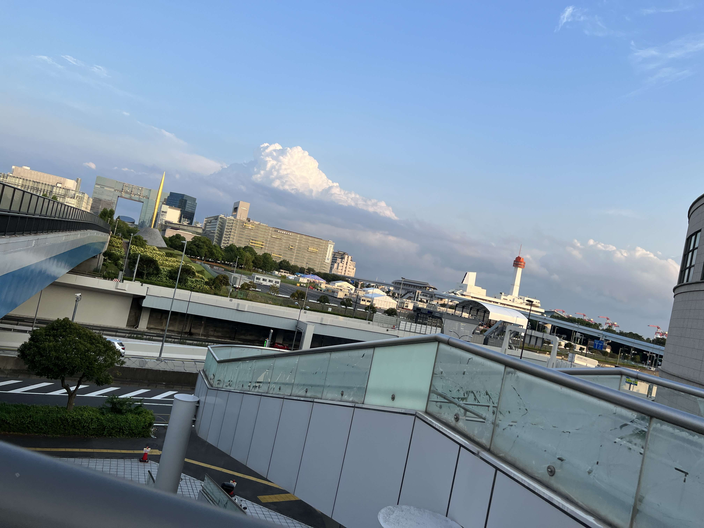
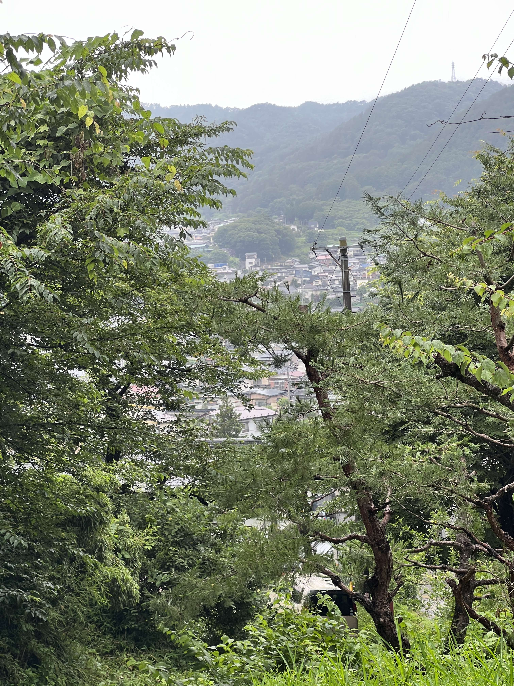
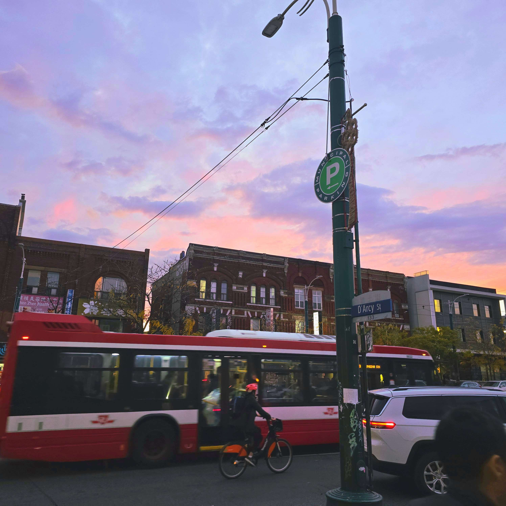
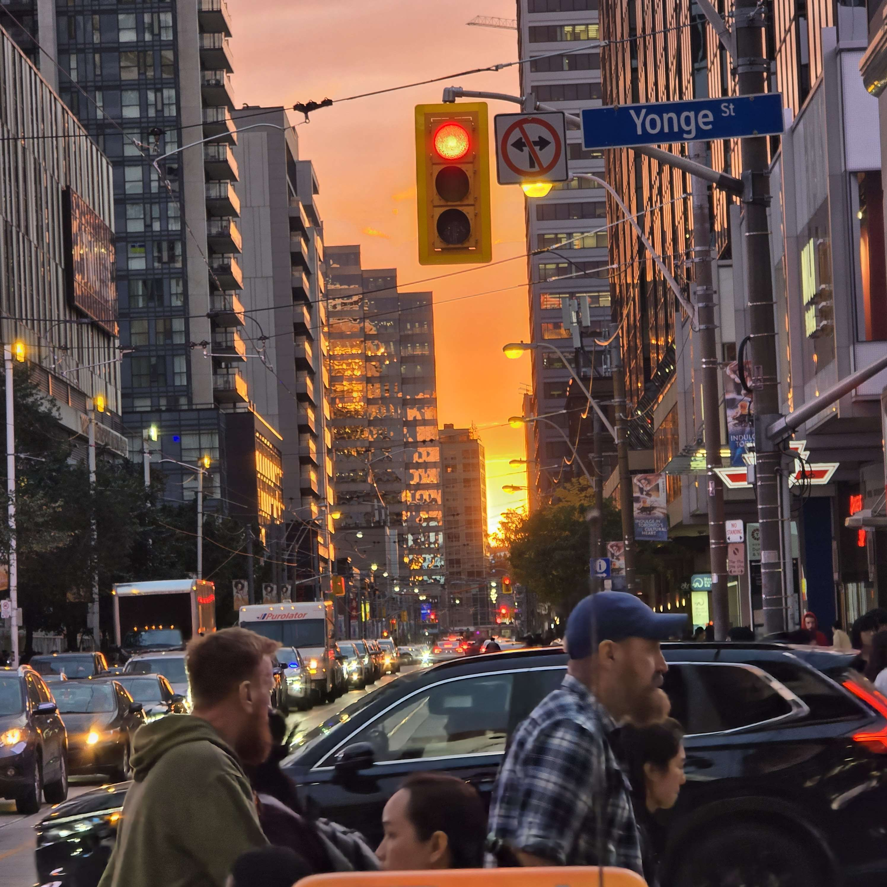

About Me!
From the city of Toronto, meet Calvin Nguyen. I am a 19 year old college student attending Humber Polytechnic in pursuit of a computer programming diploma. Prior to my education here, I have not had any experience to any sorts of computer science. However, I am more than eager to learn and strive to gain much experience being a student in this college! Even during my first semester, as of writing, I have experienced so many new things in my life and met new friends on campus. It has been quite nice!
Though there has already been struggles and hurdles plenty, I have been able to overcome and persevere through it all, especially with the assistance of my friends and my wonderful teachers. Regardless of whatever outcome may await for me at the end of my journey here in Humber, I know I will come out a better person having gained invaluable experience.

My Hobby!
Outside of my school, I have many fun hobbies! For one, I take great pride in my love for video games. In particular, I am especially fond of rhythm games, video games where players must hit “notes” that come on screen in time with the music playing in the background. Some games require the usage of fingers, flying from one end to another in almost lightspeed in order to accomplish even the smallest portion of the game. Some games require boundless stamina, where I must efficiently dance with my legs while trying not to run out of breath.
While simple in concept, the skill ceiling and dedication required is both immeasurable, and I am very proud to say that I am able to partake in this genre of video games to the degree that I have been able to over the years. This is a passion that I have been proud to maintain and fuel for so long, and I am happy to continue playing rhythm games.


Snapshots of my Life
Additionally, I also like doing a spot of photography every now and then! I would not say I am the absolute best photographer out there, however I believe I can take some really dazzling pictures when the chances arise. I enjoy taking pictures of beautiful scenery or wonderful buildings.
To most people, these environments may be the most mundane and simple things that they could think of, but I like to see the beauty in every single moment. For every beauty that I may come across, I will take out my smartphone and snap a shot. Even in this little webpage, all of the pictures you see are taken by me.
If you would like to see some more of my lovely little photos, please click the button below to access my Google Drive containing some of my favourites!

